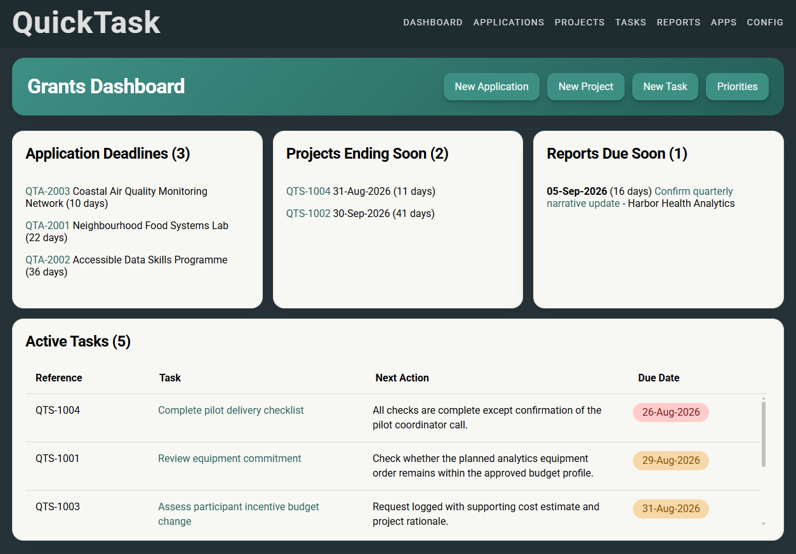

The problem
Grants operations information is often split across finance-system reports, spreadsheets, email, individual task lists and project records. Keeping track of deadlines, reporting requirements, active work and portfolio risks can require repeated manual checking and reconciliation.
What I developed
Quicktask is a purpose-built workspace for a specific grants operations environment. I designed the workflow, data structure and operational rules, and developed the application iteratively with extensive AI assistance during implementation. It combines applications, projects, tasks, reporting deadlines and priorities in one place, while keeping the relevant records connected.
Latest portfolio context
Quicktask ingests the latest available snapshot data from portfolio reports and combines it with user-managed information. This gives the user current data for day-to-day analysis alongside the tasks and deadlines that need attention.
Operational context
In grants operations, a query can change shape as work progresses. A task may begin as a simple question, then involve checking data, contacting colleagues, recording a decision, resolving an exception or planning the next action.
Quicktask keeps updates, decisions and next actions alongside the relevant application, project or task. This creates a practical breadcrumb trail for the person doing the work now and for anyone who needs to understand it later.
Why it is tailored
The value of Quicktask lies in reflecting the data, controls and recurring decisions of the environment it supports. It is not a generic task manager; it is a focused operational tool designed to make a complex grants portfolio easier to manage reliably.
Development approach
The application was developed through an iterative AI-assisted workflow. I defined the requirements, behaviours, business rules and data relationships, then tested and refined the implementation against real operational scenarios.